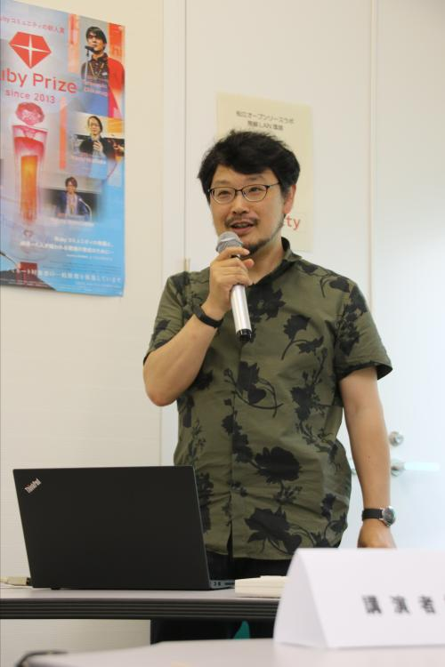
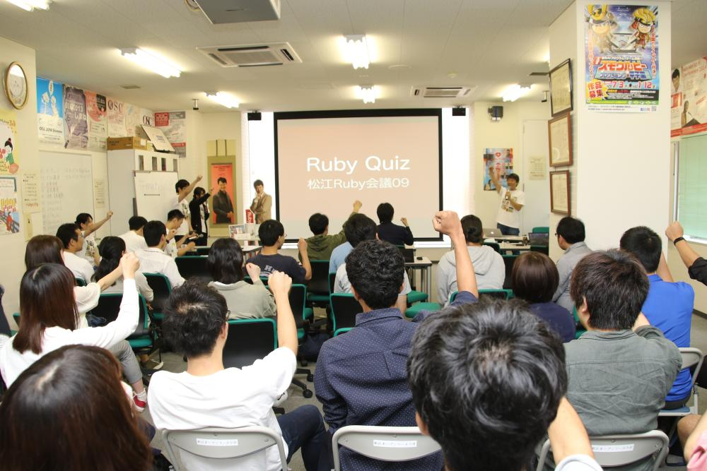

RegionalRubyKaigi レポート (68) 松江 Ruby 会議 09
RegionalRubyKaigi レポート 松江 Ruby 会議 09
はじめに
2018年6月30日（土）に松江Ruby会議09が開催されました。今年は松江オープンソースラボの拡張工事が間近という事でラボでの開催となりました。合計50名の方々に参加いただきました。
- 日時：2018年6月30日（土）11:00〜17:30（懇親会: 18:00〜）
- 場所：松江オープンソースラボ
- 主催：Matsue.rb（まつえるびー）
- 後援：日本Rubyの会
- 動画による中継(Youtube)：https://www.youtube.com/watch?v=Q4QBVKDZwcg
- 写真：松江Ruby会議09グループ写真
- Togetterまとめ： https://togetter.com/li/1243152
- 公式タグ・Twitter：#matrk09

島根でRubyが使えるようになったキッカケ (ゲスト講演)
- 発表者
- 井上 浩氏(@NaCl)

ネットワーク応用通信研究所の代表取締役の井上 浩氏に島根のRubyビジネスの歴史についてお話しいただきました。
新聞記事が発端になっての盛り上がりや県や市との取り組みについてお話しいただきました。松江オープンソースラボの開設やRubyアソシエーションの設立などいくつかのイベントが7月なのは誕生石のRubyにちなんでだった事は会場でも知らない人が多かったようです。また、しまねOSS協議会の設立のお話の時に「ユーザ/エンジニア双方のリテラシーを高める事で同じコストでより高度な事ができるようにしていきたい」とお話しいただいた時に、それを10年以上続けていただいてるのはいち松江市民としては本当にありがたい事だと感じました。
Rubyはなんでできているの？（基調講演）
- 発表者
- まつもとゆきひろ氏(@yukihiro_matz)

まつもと氏がRubyを設計するにあたって、参考にしたEmacsの実装や参考にした他の言語を紹介いただきました。
EmacsからはGCや最初期の正規表現といった実装以外にも、auto indentできない文法にしない考えでRuby自体より先にRubyモードを作ったといったエピソードをうかがいました。参考にした言語とその機能は次が紹介されました。
- LISP: シンボル （2.3.x以前の）Bignum メタプログラミング nil
- CLOS: オブジェクト指向
- Eiffel: 櫛形構文 require ensure rescue
- CLU
- Smalltalk: イテレータ（今で言うブロック付きメソッド呼び出し）
- Sather: undefとalias
- Python: classとdef
- C: 演算子の優先順位
逆に真似しなかった言語としてはIcon APL Forthを挙げていらっしゃいました。
質疑応答にて、既存のものがあってもRubyを設計・実装した動機について質問したところ、「自分が言語を作りたかったから。PerlやPythonが良かったとしても作っていた。」とご回答いただきました。同様のものがあった場合こそ、その動機を維持し続けることが難しいと思いますが、25年の重みを感じるご回答でした。
Redmineの更新を楽にする？1つの方法

面倒なRedmineの管理を少しでも楽にする手段を橋本氏に紹介いただきました。セキュリティアップデートの有無の通知を自動化するためのプラグインを自作し、実際に日々の運用の中に組み込むことで更新の有無を知るという部分について「楽にする」ことができたということでした。 橋本氏が自作されたプラグインについても発表中で紹介いただきましたので、こちらでもご紹介させていただきます。Slackへの通知機能等欲しい機能はまだまだあるのでぜひPRを送ってくださいとのことです。
僕とMastodon
- 発表者
- 平岡 瞬氏(@S_H_)
- 資料

山陰で稼働しているMastodonインスタンスの1つであるいわみどんを以前運営されていた平岡氏にMastodonの最近の動向を紹介いただきました。Mastodon本体のPWA対応のような新機能のご紹介から、じゃんけんに負けたらアカウントが凍結されるというユニークさあふれるインスタンスのお話まで幅広く紹介いただきました。今後の課題としてアカウントの削除による連合の負荷のような実際に起きうる問題まで把握されていたのが印象的でした。
また、平岡氏が開発したプロダクトも紹介していただきました。以下はその一部ですが、Togetterや氏のスライドに他のものも掲載されていますので是非ご覧ください。
- Foods Checker: Mastodonアカウントでログインできる食品管理サービス
- Legion: Ruby/Tk製のMastodonクライアント
LTセッション
きむらしのぶ氏(@mix_dvd)の司会で以下の4件のLTの発表が行われました。
- 松江ではたらく
- 発表者
- 加藤 龍氏(@k0matatsu)
- 発表者
- 僕たちとRuby
- 発表者
- ハー・タイン 氏 & ポール 氏
- 発表者
- わたしとスプラウト.rb
- 発表者
- 竹田 喜世子氏
- 発表者
- Rubyでつくるスレッド
- 発表者
- 前田 修吾氏
- 資料
- 発表者
若手エンジニア × Rubyプロジェクト = ？？？
- 発表者
- 石川 瑞希氏

石川さんが新入社員として、現在の会社に入ってから取り組まれているRubyプロジェクトについて開発手法を交えてご紹介いただきました。 アジャイル開発手法については採用されている開発案件も多いかとは思いますが、その中でも若手エンジニアから見てどんな良い点があったのか、気づいた点などを発表いただき、いつもとはまた違った視点で開発手法を振り返るきっかけとなったと思います。
後方互換の保ち方

日高氏が開発しているThinreportsを0.8から0.9にバージョンアップした時の変更を例として「後方互換の保ち方」についてお話いただきました。 ThinreportsのTLFファイル内に保存されたデータにあるSVGは、0.8まではそのまま文字列として保存されていましたが、開発時に差分が確認しにくいなどの不便な点があり、0.9ではJSON形式で保存するように変更されたとのことでした。 0.9からはSVGが表現していた箇所も(差分を確認しやすい中間データとして)JSON形式で保存するように変更され、0.9以降で0.8までのTLFファイルを使用する時は、JSON形式に変換してから読み込めるように変更されたとのことでした。 上記のような後方互換の保ち方を修正箇所のコード付きでご説明いただき、公開したプロダクトをバージョンアップした時にどのような点を気にすべきか共有していただいたセッションでした。あと今後のThinreportsの新機能についてもご紹介いただきました。
Yet Another Ruby Application Framework “Alone”
- 発表者
- 東 裕人氏（TOC しまねソフト研究開発センター）

東氏がOSSとして公開している「Alone」について活用事例の紹介を含めてお話ししていただきました。 事例の紹介の際には実際にどのようなコードで動いているかなどの解説もあり、会場の関心を集めていました。 コードを含めた詳しい説明をしていただいたおかげで、わかりやすく、大変有意義なセッションとなりました。
Ruby Quiz
- 発表者
- 倉橋 徹氏(@torukurahashi)と竹田 喜世子氏
- 資料

Rubyにまつわるクイズを解いて賞品をゲットしよう！という恒例のクイズ大会です。
3択の選択問題を5問、前半と後半で2回実施しました。来場者全員参加で正解した人が勝ち残り、前半・後半それぞれ2名の方に賞品がプレゼントされました。なお賞品はスポンサー企業様からご提供いただきました。
Rubyを使っていても普段あまり気にしていない部分を再確認できる楽しいコーナーでした。
謝辞
ご協力いただいた企業様
エクスウェア株式会社, ファーエンドテクノロジー株式会社, 株式会社ネットワーク応用通信研究所, 株式会社Misoca, 株式会社イーストバック
著者について
西田 雄也 (@nishidayuya)
プログラマ。最近はコマンドによる変更のコミットに使うgit-cococoを作った。
佐田 明弘 (@sada4)
Matsue.rbにひっそりといるプログラマ。
吉岡 隆行 (@yoshioka_cb)
コミュニティー（勉強会）おじさん。松江Ruby会議09 実行委員長。
木村 友哉(@tomo-k)
Apple 信者な Rubyist。
橋本 将 (@sho_hashimoto)
Matsue.rb の雑用係。定例会にはだいたい出席してます。